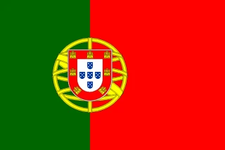
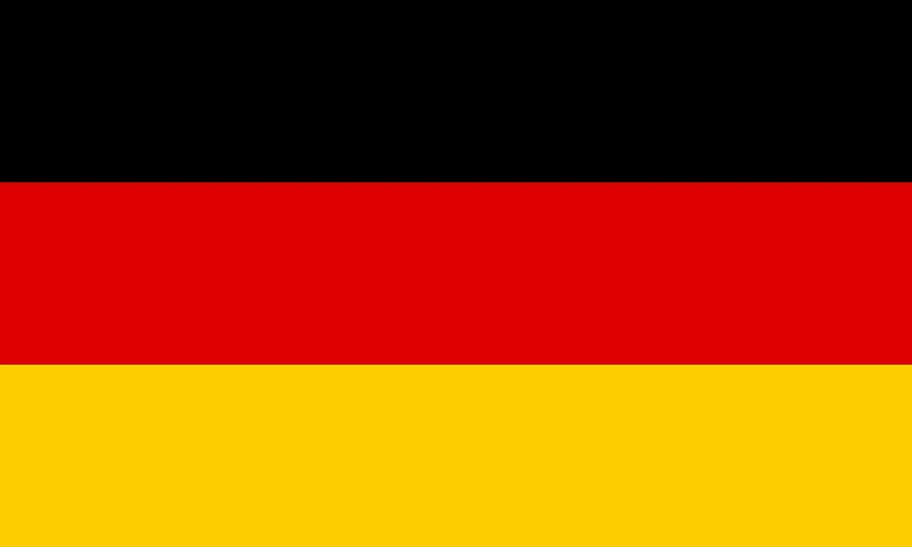

1. England’s Date with Destiny
July 30, 1966. Wembley Stadium. The moment English football had been waiting for.
A crowd of 96,924 packed into the iconic ground, their voices rising into the gray London sky, hearts pounding with the weight of history. England, a nation that had invented football but never conquered its biggest stage, stood one game away from immortality. Their opponents, West Germany, were battle-tested, ruthless, and unafraid.
This was no ordinary final—it was a clash of wills, a test of endurance, and a game that would be remembered for generations.
A Long Road to Wembley
England’s campaign had started with questions. The squad was strong, but did they have the firepower to go all the way? Alf Ramsey, their meticulous, no-nonsense manager, believed so. He had instilled in his players a philosophy that would define them: teamwork over individualism, tactics over flair.
The group stage had been steady, if unspectacular. A tense goalless draw against Uruguay left doubts lingering, but England found their rhythm with back-to-back 2-0 wins over Mexico and France. Geoff Hurst’s emergence as a goal threat and the midfield brilliance of Bobby Charlton gave hope.
Then came Argentina in the quarterfinals. It was no longer just a football match—it was war. The South Americans played with skill but also with aggression. When their captain Antonio Rattín was controversially sent off for dissent, Argentina fumed, believing the referee was biased. England, unmoved, seized the moment. Hurst’s header won it, but the fallout was brutal. Alf Ramsey, refusing to let his players swap shirts afterward, branded Argentina as "animals"—a comment that ignited a rivalry for decades to come.
The semifinals brought Portugal, led by the electric Eusébio. He had tormented defenses all tournament, scoring at will, but Ramsey devised the perfect plan—Nobby Stiles was given one job: stop Eusébio. The little midfield enforcer stuck to him like glue, snuffing out his brilliance. Bobby Charlton struck twice, and despite a late penalty from Eusébio, England triumphed 2-1.
Now, only one hurdle remained.
The Final: A Battle for the Ages
The match began at a furious pace. West Germany, unfazed by the raucous Wembley crowd, struck first. In the 12th minute, Helmut Haller found space and rifled the ball past Gordon Banks. England were stunned.
But they did not waver. Just six minutes later, Hurst rose to meet a Bobby Moore free kick, guiding a header into the net. The roar from Wembley was deafening.
The game settled into a gripping, tactical battle. Then, in the 78th minute, England surged ahead. A scramble in the box, a loose ball, and Martin Peters reacted first—2-1! The nation could taste glory.
But West Germany had their own answer. In the dying moments, Wolfgang Weber pounced on a deflected ball and forced it home. 2-2. Extra time beckoned.
Exhausted players, hearts pounding, now had to find something extra.
The Goal That Shook the World
102nd minute. Alan Ball whipped in a cross, Hurst turned, and fired a shot that smashed against the crossbar. The ball crashed down onto the goal line and bounced out. Confusion. England players wheeled away in celebration, West German players protested.
Did it cross the line?
The referee, Gottfried Dienst, was uncertain. He consulted his linesman, Tofiq Bahramov, who confidently signaled for a goal. England led 3-2.
Even today, the debate rages—was it in? The truth is buried in history, but to England, it didn’t matter.
As West Germany pushed forward desperately, the final act unfolded. The clock ticked down, England cleared the ball, and suddenly, Geoff Hurst found himself free.
A voice rang out from the touchline: "Go on, hit it!"
Hurst took one last stride and blasted the ball into the net.
4-2. Hat-trick. Game over.
A Captain’s Moment, A Nation’s Glory
As the final whistle blew, Wembley exploded. England were world champions.
Amidst the chaos, one man stood apart—Bobby Moore. Calm, composed, as if he had known all along. When he ascended the steps to receive the Jules Rimet Trophy from Queen Elizabeth II, he did something remarkable.
Covered in sweat and dirt, he wiped his hands on his shorts before shaking the Queen’s hand. A moment of class.
Moore lifted the trophy high, and England’s finest hour was complete.
They had conquered the world.

2. Eusébio’s Rampage: The Black Panther’s World Cup
Football had never seen a force quite like Eusébio da Silva Ferreira.
By the time Portugal arrived in England for the 1966 World Cup, the young forward had already established himself as one of the world’s most electrifying talents. But this tournament would elevate him to something greater—a legend, a hero, a name etched into football history.
Nine goals. Unstoppable performances. A comeback for the ages. And a legacy that endures to this day.
This was Eusébio’s World Cup.
Portugal’s Rise: The Dark Horses Arrive
Portugal had never qualified for a World Cup before. While their domestic league had produced great players, the national team had always fallen short. That changed in the early 1960s, thanks to a golden generation led by Eusébio, the star of Benfica’s European triumphs.
Drawn into Group 3 alongside Hungary, Bulgaria, and defending champions Brazil, Portugal were seen as dangerous but unproven. They would leave no doubt.
The tournament opener against Hungary set the tone. Portugal dominated from the start, winning 3-1. Eusébio didn’t score, but his presence alone caused havoc—his pace and power stretching the Hungarian defense to its limit.
Next came Bulgaria, and Portugal brushed them aside 3-0. Eusébio opened his account with a typically ruthless strike, a warning of what was to come.
But the real test was against Brazil.
Destroying the Champions
Brazil, the kings of world football, had won the last two World Cups. With Pelé, Garrincha, and Jairzinho, they had arrived in England expecting to make it three in a row. Portugal had other plans.
From the outset, the match was a war. The Brazilian defense targeted Eusébio, fouling him relentlessly. But they couldn’t stop him.
A powerful, low drive. A clinical finish in the box. Eusébio scored twice as Portugal stunned Brazil 3-1, eliminating the reigning champions. The football world had a new superstar.
But his greatest moment was still to come.
The Quarterfinal: 3-0 Down, The Impossible Comeback
Portugal’s quarterfinal opponent was North Korea, the tournament’s biggest surprise. The Asian underdogs had shocked the world by defeating Italy, and in the opening 25 minutes, they tore Portugal apart.
1-0. 2-0. 3-0.
Stunned silence.
Portugal were collapsing. The dream was over.
But Eusébio refused to let it end.
In the 27th minute, he collected the ball outside the box, drove forward, and unleashed a devastating shot into the net. 3-1. A lifeline.
Minutes later, he surged into the box, skipped past defenders, and won a penalty. Calm as ever, he slotted it home. 3-2.
Halftime came, and North Korea were rattled. Eusébio, meanwhile, was only getting started.
In the second half, he was relentless—charging at defenders, winning another penalty, and converting it with ice-cold precision. 3-3.
Portugal had come back from the dead, and the Black Panther wasn’t done yet.
A darting run, a perfect finish—Eusébio completed the turnaround with his fourth goal. 4-3. The final nail came in the closing minutes as José Augusto added a fifth. Portugal had won 5-3.
Eusébio left the pitch in tears—overcome with emotion, drained, exhausted, but victorious. It was one of the greatest individual performances in World Cup history.
Heartbreak at Wembley
In the semifinals, Portugal faced England. Wembley was a fortress, the crowd roaring for the hosts. Eusébio, the tournament’s top scorer, was the man to stop.
Alf Ramsey had a plan. He assigned Nobby Stiles, England’s tenacious midfield enforcer, to shadow Eusébio everywhere he went. It worked. Stiles was relentless, cutting off passing lanes, harrying Eusébio at every turn. Portugal struggled.
Bobby Charlton struck twice for England. Eusébio finally found a way through with a late penalty, his ninth goal of the tournament, but it wasn’t enough. Portugal fell 2-1.
As the final whistle blew, Eusébio walked off the pitch with tears in his eyes. He had given everything, but the dream was over.
A Legacy That Lasts
Portugal would go on to beat the Soviet Union in the third-place match, securing their best-ever World Cup finish. Eusébio finished as the tournament’s top scorer with nine goals, earning the Golden Boot.
His performances had been a revelation. Power, pace, precision—he had it all. He wasn’t just a goal machine; he was a player who could single-handedly change the course of a match.
For Portugal, this was the moment they announced themselves on the world stage. Eusébio had carried them there.
And though Portugal wouldn’t return to the World Cup for another 20 years, Eusébio’s legacy never faded.
Today, his name is spoken with reverence—one of football’s greatest icons, the Black Panther who ruled 1966.
3. Argentina’s Fury: The Battle of Wembley
It was meant to be a football match. Instead, it became war.
The 1966 World Cup quarterfinal between England and Argentina was one of the most controversial games ever played on the sport’s biggest stage. A match filled with tension, accusations, and a decision that would ignite a footballing rivalry for decades.
For Argentina, it was a robbery. For England, it was justice. For the world, it was chaos.
A Clash of Styles
By the time the quarterfinals arrived, England had begun to believe. Alf Ramsey’s team had advanced through the group stage without conceding a goal, dispatching Mexico and France after a dull draw with Uruguay. Their disciplined, organized play had them on track for their best-ever World Cup.
Argentina, meanwhile, had battled their way through a tough group featuring West Germany, Spain, and Switzerland. They were talented, aggressive, and fiercely determined. Captain Antonio Rattín, the backbone of the team, embodied their physical, no-nonsense approach.
But beneath the football lay something deeper. England and Argentina’s history—shaped by colonial ties, cultural clashes, and simmering political tensions—meant this was more than just a game.
From the moment the teams stepped onto the Wembley pitch, it felt like a fight waiting to erupt.
The Tension Boils Over
England, playing in red, looked to dictate the game early, moving the ball through Bobby Charlton and Alan Ball. But Argentina, in their white-and-blue stripes, disrupted England’s rhythm with sharp tackles and relentless pressing.
Fouls flew in from both sides. The Argentine defenders hacked at Geoff Hurst and Roger Hunt. England’s Nobby Stiles responded in kind. The referee, German official Rudolf Kreitlein, struggled to keep control.
Then, in the 35th minute, the match exploded.
Antonio Rattín, Argentina’s captain and midfield general, had been arguing with the referee over a series of decisions. Kreitlein, apparently frustrated with Rattín’s protests and believing he was being verbally abused (despite not understanding Spanish), suddenly decided enough was enough. He sent Rattín off.
Wembley roared. Argentina erupted.
Rattín refused to leave the pitch. He stood defiantly, demanding an explanation, pleading his innocence. His teammates surrounded the referee in protest. The situation spiraled. English players watched, some amused, some exasperated. The crowd booed as the Argentine captain sat down on the grass, refusing to budge.
It took ten minutes of chaos before Rattín was finally escorted off. On his way, he made sure to walk over to the royal box and tug at his shirt—an unmistakable gesture, a symbol of perceived injustice.
Argentina, now down to ten men, were furious. Their World Cup dreams were slipping away, and they believed it had been stolen from them.
England Strike, The War of Words Begins
With Argentina rattled and down a man, England took control. The breakthrough came in the 78th minute. Geoff Hurst, replacing the injured Jimmy Greaves, rose high in the box to meet a pinpoint cross from Martin Peters. His header was perfect—past goalkeeper Antonio Roma and into the net.
England 1, Argentina 0.
The job was done. England held firm, securing a place in the semifinals. But when the final whistle blew, the drama was far from over.
As England celebrated, Argentina refused to shake hands. They stormed off, still seething.
Alf Ramsey, England’s manager, saw his players exchanging shirts with their South American counterparts and immediately stopped them. "No," he insisted. "You do not swap shirts with animals."
The comment was explosive.
The Argentine players and media were livid. "They stole the match from us," Rattín would later say. "The referee was against us from the start." Argentine papers accused FIFA of protecting the hosts, ensuring England’s path to glory.
The British press, on the other hand, saw it differently. "The animals have gone," read one headline the next day, repeating Ramsey’s words. England had won, they argued, because they stayed composed while Argentina lost control.
The match had ended. The war of words had just begun.
A Rivalry is Born
For England, this was a stepping stone. They went on to defeat Portugal in the semifinals and then conquered West Germany in the final, lifting the World Cup for the first—and so far, only—time.
For Argentina, however, the memory of 1966 burned deep. They saw it not just as a defeat but as a moment of betrayal, a symbol of European arrogance against South American grit.
The bitterness didn’t fade. When the two nations met again in later World Cups—most famously in 1986, when Diego Maradona scored both his 'Hand of God' goal and the 'Goal of the Century'—the ghosts of 1966 were still present. The rivalry had been born in Wembley’s storm of controversy, and it would never die.
Even decades later, Antonio Rattín remained convinced he had been cheated. "They never wanted us to win," he said in an interview years later. "They had already decided who would go through."
For England, the 1966 quarterfinal was a test of resolve, a necessary battle on the road to triumph. For Argentina, it was an injustice never to be forgotten.
The Battle of Wembley—one of football’s greatest grudges—lives on.

4. Brazil’s Fall from Grace: The Brutal End of a Dynasty
For the first time in football history, Brazil arrived at a World Cup as the undisputed kings of the sport. They had ruled in 1958 and 1962, dazzling the world with their jogo bonito—"the beautiful game"—a philosophy built on creativity, skill, and attacking brilliance. With Pelé, the world's greatest player, still in his prime, and the legendary Garrincha making one final tournament appearance, they were the team to beat.
Yet by the end of the group stage, the unthinkable had happened. Brazil were out.
Knocked down by brutal tackles, outplayed by disciplined European sides, and exposed by tactical evolution, the reigning champions learned a harsh lesson in England: beauty alone would no longer be enough to win.
A Rough Welcome
Brazil’s title defense began on July 12 at Goodison Park in Liverpool, facing Bulgaria. It should have been routine. Instead, it was war.
From the opening whistle, the Bulgarians made their intentions clear. They couldn’t match Brazil’s flair, but they could certainly kick them. Pelé, the sport’s golden boy, was their primary target. Time and time again, he was hacked down, clattered from behind, or blocked off the ball. The referee largely ignored the abuse, a pattern that would define Brazil’s campaign.
Despite the rough treatment, Brazil triumphed 2-0. Pelé scored a stunning free-kick, bending the ball around the Bulgarian wall, while Garrincha added another with a thunderous strike. The duo—who had never lost a match together—had done their job. But the victory came at a cost.
Pelé limped off the pitch battered and bruised. His participation in the next game was in doubt.
Hungary’s Tactical Masterclass
The injuries from the Bulgaria match left Pelé out for Brazil’s second fixture against Hungary. Without their talisman, the champions looked vulnerable. And Hungary, an underrated yet tactically sharp team, sensed blood.
What followed was one of the most surprising results in World Cup history.
From the start, Hungary outplayed Brazil. They passed with precision, attacked relentlessly, and outmaneuvered a Brazilian defense that looked uncharacteristically disorganized. Florian Albert, Hungary’s playmaker, orchestrated a masterful performance, picking apart the Selecão’s backline with ease.
Brazil fell behind early when Ferenc Bene capitalized on a defensive lapse to score in the third minute. A glimmer of hope arrived when Tostão equalized, but Hungary remained relentless. Mészöly restored Hungary’s lead with a penalty before János Farkas sealed the 3-1 victory with a sublime volley.
For the first time in eight years, Brazil had lost a World Cup match. Worse, they had been outplayed.
Portugal and the End of a Dynasty
With their tournament on the line, Brazil needed a win against Portugal. Pelé, still in pain, forced himself back onto the pitch, determined to save his country’s campaign. But Portugal, led by the electric Eusébio, had other plans.
From the outset, it was clear that this would be another brutal encounter. Portugal’s defenders, inspired by Bulgaria’s tactics, targeted Pelé. Within minutes, he was hacked down. Then again. Then again.
One challenge, in particular, from João Morais was as cynical as it was devastating. Morais clattered into Pelé with a scissor-like tackle, taking him out completely. It was an obvious foul, but in an era where referees were reluctant to punish aggressive play, no action was taken.
Pelé, injured, had to play on. Substitutes were not allowed in the 1966 World Cup, meaning that if he left the field, Brazil would be reduced to ten men. He hobbled on, effectively playing on one leg, a shadow of himself.
Meanwhile, Eusébio ran riot. The "Black Panther" was unstoppable, scoring twice as Portugal dominated. The final score: 3-1.
Brazil, the back-to-back champions, were out.
Lessons Learned
The defeat was a national tragedy. Brazil had never failed to progress past the group stage before. Their elimination sent shockwaves through world football, marking the end of an era.
The message was clear: football was changing. The sport was becoming faster, more physical, more tactical. Brazil’s artistry alone was no longer enough. They needed a new approach.
The response came four years later in 1970, when Brazil reinvented themselves. They built a stronger, fitter, more organized team, blending tactical discipline with attacking brilliance. The result? Arguably the greatest World Cup-winning side of all time.
But in 1966, on the rough pitches of England, the kings had been dethroned. Pelé, battered and bruised, left the tournament disillusioned, vowing never to play in another World Cup. "Football is no longer the beautiful game," he declared.
Thankfully, in 1970, he would return to prove himself wrong.
Brazil’s fall in 1966 was not just about defeat—it was about transformation. The pain of England shaped the glory of Mexico four years later. But for those who witnessed it, 1966 remains the year when the beautiful game met its harshest reality.

5. West Germany’s Never-Say-Die Spirit: The Fight That Defined a Generation
West Germany arrived at the 1966 World Cup with a reputation. Gritty, disciplined, and ruthlessly efficient, they were a team that never knew when they were beaten. Four years earlier, they had fallen in the quarterfinals to Yugoslavia. This time, they were determined to go further.
Led by legendary captain Uwe Seeler, with the rising star Franz Beckenbauer in midfield and the prolific Helmut Haller up front, the Germans were not favorites—Brazil and England held that tag—but they were feared.
By the time the tournament ended, they had played some of the finest football seen in England, mounted one of the most dramatic comebacks in World Cup history, and fought to the very last breath in a final that remains one of the greatest ever played.
A Strong Start
West Germany’s journey began smoothly. Their opening match against Switzerland set the tone for their attacking prowess, with Helmut Haller netting twice and Beckenbauer announcing himself on the world stage with a brilliant brace of his own in a dominant 5-0 victory.
Next came a tricky encounter with Argentina. It was a bruising, hard-fought game that ended 0-0, with both teams testing each other’s defenses and setting the stage for future World Cup clashes.
A 2-1 win over Spain, thanks to goals from Seeler and Lothar Emmerich, confirmed their place in the knockout rounds. Germany had navigated the group stage without much trouble, but sterner tests awaited.
Demolishing Uruguay
In the quarterfinals, they faced a traditionally strong Uruguay side. But this was not the Uruguay of old. The two-time champions had struggled to find their rhythm, and West Germany smelled weakness.
Beckenbauer was again at the heart of everything, dictating play with elegance and intelligence. Haller and Seeler were ruthless in attack. By the final whistle, Germany had dismantled Uruguay 4-0.
This was a statement.
A Grueling Semifinal
The semifinal pitted them against the Soviet Union, a team that matched Germany in resilience and physicality. The game was a battle of wills, with neither side willing to give an inch.
Germany struck first through Haller, but the Soviets, led by the legendary Lev Yashin in goal, refused to collapse. Beckenbauer, however, changed the game with a moment of brilliance, driving forward from midfield and drilling a low shot past Yashin to double the lead.
The Soviet Union pulled one back, but Germany’s defense—anchored by Willi Schulz and Wolfgang Overath—held firm. A hard-fought 2-1 victory sent them to their second-ever World Cup final.
Awaiting them at Wembley was the host nation, England.
The Final: Resilience to the End
July 30, 1966. Wembley Stadium. A record crowd of 96,924 fans packed the stands. The English were dreaming of their first World Cup. The Germans, seeking their second.
West Germany started strongly. Haller, their top scorer, struck in the 12th minute, silencing Wembley as he slotted the ball past Gordon Banks. But England hit back swiftly, Geoff Hurst leveling the score.
From there, the game became a chess match. Both teams battled fiercely in midfield, Beckenbauer tasked with keeping England’s Bobby Charlton quiet. When Martin Peters put England ahead in the 78th minute, the host nation could almost taste victory.
But Germany never knew when they were beaten.
In the dying moments, they won a free-kick. The ball was lofted into the box. Chaos. A scramble. Wolfgang Weber reacted quickest, poking the ball home. 2-2.
West Germany had done it again.
They had fought back in the final minutes, dragging the game into extra time.
The Controversy
The extra period was grueling. Both teams were exhausted, but England found something extra. Then came the moment that would define the final forever.
Hurst’s shot in the 101st minute hit the underside of the bar, bounced down, and spun out. Had it crossed the line? The referee consulted the Soviet linesman, Tofiq Bahramov, who signaled for a goal.
The Germans protested, but the decision stood. 3-2 England.
Still, West Germany pushed forward. They threw everything at England, but in the final moments, with their players committed upfield, Hurst broke away and hammered home his third goal. 4-2.
West Germany had fought to the last second, but for once, they had been beaten.
Heartbreak, but Not the End
The loss was bitter. Many German players felt robbed by the controversial goal. Some still do. But as England celebrated, West Germany were already thinking ahead.
This was not the end.
Beckenbauer, just 20 years old, had proven himself as one of the world’s finest players. He would return. Seeler, the heartbeat of the team, vowed to fight on. The lessons of 1966 would fuel them.
Four years later, in Mexico, the Germans reached another final. And in 1974, on home soil, Beckenbauer lifted the World Cup as captain.
But it all started here.
In 1966, West Germany showed the world why they were the ultimate competitors. They fought to the last whistle, came back when all seemed lost, and earned the respect of every opponent they faced.
They may have lost the final, but they won something greater—an identity. The never-say-die spirit of West German football was born in 1966, and it would carry them to future glory.
6. Bobby Moore: The Class of a Captain
In football, captains come in many forms. Some lead with passion, others with raw aggression. A select few, however, lead with an effortless sense of class—grace under pressure, poise in the storm.
Bobby Moore was the embodiment of that rare breed.
In 1966, as England hosted their first-ever World Cup, Moore was their rock. Not just the team’s captain, but its calmest head, its most assured presence, and, ultimately, the man who would stand tallest when it mattered most.
By the time he lifted the Jules Rimet Trophy on July 30, Moore had cemented himself as an all-time great. But his story was not just about triumph. It was about composure, leadership, and a quiet but unshakable belief that carried England to glory.
The Unflappable Leader
Moore’s journey to the 1966 World Cup had been far from easy. Just months before the tournament, he was locked in a bitter contract dispute with West Ham. At the time, English football had a maximum wage rule, and despite being one of the country’s finest players, Moore had little financial security.
West Ham eventually secured his signature, but the uncertainty leading up to the tournament could have unsettled a lesser man. Not Moore.
As England kicked off their campaign, he was as composed as ever. His ability to read the game, intercept passes, and lead by example was unmatched. While other defenders lunged into tackles, Moore made it look effortless—positioning himself so perfectly that he rarely had to.
In the group stage, England’s defense was near impenetrable. They conceded no goals in their opening three matches—a 0-0 draw with Uruguay followed by two 2-0 wins over Mexico and France. Moore was at the heart of it, directing traffic, clearing danger, and setting the tempo with his trademark calmness.
Then came the knockout rounds, where Moore’s influence became even more apparent.
The Battle Against Argentina
The quarterfinal against Argentina was war. Tensions between the two nations ran high, and the South Americans played with aggression, trying to unsettle England.
Argentina captain Antonio Rattín was controversially sent off for dissent, a moment that enraged the visitors and turned Wembley into a cauldron of noise. England needed a steady hand to guide them through the chaos.
Moore provided it.
As the game neared its decisive moment, it was Moore who made the breakthrough happen. Spotting Geoff Hurst making a run into the box, Moore executed a perfect long pass, floating the ball with pinpoint accuracy onto Hurst’s head. One flick, one goal, and England were through.
It was a moment of pure class from the captain—vision, precision, and leadership in one.
Nullifying Eusébio
Next came Portugal in the semifinals. England’s biggest challenge yet, as they faced Eusébio—the tournament’s top scorer and the most devastating attacking force in the world.
Moore, alongside Nobby Stiles, ensured he would not have his way. While Stiles shadowed the Portuguese talisman, snapping at his heels, Moore was the defensive general, cutting off passing lanes and ensuring that every time Eusébio tried to break through, there was a white shirt blocking his path.
It was another masterclass. England won 2-1, and for the first time in history, they were in a World Cup final.
Moore was 90 minutes away from football immortality.
The Final: Moore’s Masterclass
July 30, 1966. Wembley was packed. The noise was deafening. Across from England stood West Germany, a team that simply refused to die.
Moore, as ever, was unshaken.
Germany struck first, Helmut Haller scoring after 12 minutes. England responded through Hurst, but the game remained tense, nervy, and fiercely contested.
Then, in the 78th minute, Moore stepped up. As the ball broke to him in midfield, he didn’t hesitate. With laser precision, he delivered a perfectly weighted pass into the box, finding Martin Peters in space. Peters slotted it home. 2-1, England.
The finish was clinical, but the goal was all about the pass. Moore had created it with his vision, his calmness, and his ability to read the game seconds ahead of everyone else.
But West Germany weren’t finished. With just seconds remaining, they equalized through Wolfgang Weber.
Extra time beckoned.
Again, Moore refused to panic. England needed leaders. He gave them one.
Hurst’s controversial goal—the shot that crashed off the crossbar and was awarded after consultation with the Soviet linesman—put England back in front. Germany pushed for another equalizer, but Moore was unbreakable at the back. He anticipated every German attack, intercepted every ball, and cleared every danger.
Then, in the dying seconds, came the moment that summed up Moore’s class. With Germany pouring forward, he won possession and carried the ball upfield. He could have smashed it clear. Instead, he looked up and saw Hurst making a run.
A perfect, measured pass into space. Hurst ran onto it, powered through, and slammed the ball home. 4-2.
Game over.
Seconds later, the final whistle blew.
Lifting the Trophy
The image of Bobby Moore, mud-stained but immaculate, being lifted onto his teammates’ shoulders and then walking up the Wembley steps remains iconic.
As Queen Elizabeth II handed him the Jules Rimet Trophy, he didn’t just grab it and celebrate. He wiped his hands on his shorts, ensuring he received it with respect. It was a small moment, but it spoke volumes about the man.
Dignified. Poised. A leader in every sense.
Years later, Pelé called Moore the greatest defender he had ever faced. Franz Beckenbauer held him in the highest regard. Opponents respected him, teammates adored him, and England would never again find a captain quite like him.
The 1966 World Cup was England’s greatest moment. But it was Bobby Moore’s tournament. The man who led with grace, defended with intelligence, and lifted the trophy with a quiet, unshakable pride.
A champion. A gentleman. An eternal legend.